from sklearn.cluster import KMeans
import matplotlib.pyplot as plt
import seaborn as sns
from tqdm import tqdm
from katlas.core import *
from katlas.plot import *
import pandas as pd, numpy as npKmeans motifs
Kmeans
Data
# human = pd.read_parquet('raw/human_phosphoproteome.parquet')
# df_grouped = pd.read_parquet('raw/combine_source_grouped.parquet')
human = Data.get_human_site()
df_grouped = Data.get_ks_dataset()all_site = pd.concat([human,df_grouped])all_site.sub_site.isna().sum()np.int64(0)all_site = all_site.drop_duplicates('sub_site')all_site.shape(131843, 21)# all_site = all_site[['sub_site','site_seq']].drop_duplicates('sub_site')One-hot encode
onehot = onehot_encode(all_site['site_seq'])CPU times: user 2.21 s, sys: 1.14 s, total: 3.35 s
Wall time: 3.35 sonehot.head()| -20A | -20C | -20D | -20E | -20F | -20G | -20H | -20I | -20K | -20L | ... | 20R | 20S | 20T | 20V | 20W | 20Y | 20_ | 20s | 20t | 20y | |
|---|---|---|---|---|---|---|---|---|---|---|---|---|---|---|---|---|---|---|---|---|---|
| 0 | 0.0 | 0.0 | 0.0 | 0.0 | 0.0 | 0.0 | 0.0 | 0.0 | 0.0 | 0.0 | ... | 1.0 | 0.0 | 0.0 | 0.0 | 0.0 | 0.0 | 0.0 | 0.0 | 0.0 | 0.0 |
| 1 | 0.0 | 0.0 | 0.0 | 0.0 | 0.0 | 0.0 | 0.0 | 0.0 | 0.0 | 0.0 | ... | 0.0 | 0.0 | 0.0 | 0.0 | 0.0 | 0.0 | 0.0 | 0.0 | 0.0 | 0.0 |
| 2 | 0.0 | 0.0 | 0.0 | 1.0 | 0.0 | 0.0 | 0.0 | 0.0 | 0.0 | 0.0 | ... | 0.0 | 0.0 | 0.0 | 0.0 | 0.0 | 0.0 | 0.0 | 0.0 | 0.0 | 0.0 |
| 3 | 0.0 | 0.0 | 0.0 | 1.0 | 0.0 | 0.0 | 0.0 | 0.0 | 0.0 | 0.0 | ... | 0.0 | 0.0 | 0.0 | 0.0 | 0.0 | 0.0 | 0.0 | 0.0 | 0.0 | 0.0 |
| 4 | 0.0 | 0.0 | 0.0 | 0.0 | 0.0 | 0.0 | 0.0 | 0.0 | 0.0 | 0.0 | ... | 0.0 | 0.0 | 0.0 | 0.0 | 0.0 | 0.0 | 0.0 | 0.0 | 0.0 | 0.0 |
5 rows × 967 columns
Elbow method
all_site.shape(131843, 19)sns.set(rc={"figure.dpi":300, 'savefig.dpi':300})
sns.set_context('notebook')
sns.set_style("ticks")get_clusters_elbow(onehot)CPU times: user 23min 20s, sys: 46.3 s, total: 24min 6s
Wall time: 9min 50s
Kmeans
If using RAPIDS
# # pip install --extra-index-url=https://pypi.nvidia.com \"cudf-cu12==25.2.*\" \"cuml-cu12==25.2.*\"
# %load_ext cudf.pandas
# import numpy as np, pandas as pd
# from cuml import KMeans
# import matplotlib.pyplot as plt
# import seaborn as sns
# from tqdm import tqdm
# from katlas.core import *
# from katlas.plot import *def kmeans(onehot,n=2,seed=42):
kmeans = KMeans(n_clusters=n, random_state=seed,n_init='auto')
return kmeans.fit_predict(onehot)ncluster=[50,150,300]
seeds=[42,2025,28]all_site['test_id']=1get_cluster_pssms(all_site,'test_id')100%|██████████████████████████████████████████████████████████████████████████████████| 1/1 [00:02<00:00, 2.03s/it]| -20P | -20G | -20A | -20C | -20S | -20T | -20V | -20I | -20L | -20M | ... | 20H | 20K | 20R | 20Q | 20N | 20D | 20E | 20pS | 20pT | 20pY | |
|---|---|---|---|---|---|---|---|---|---|---|---|---|---|---|---|---|---|---|---|---|---|
| 1 | 0.07984 | 0.06669 | 0.07291 | 0.01333 | 0.06488 | 0.04065 | 0.0505 | 0.0346 | 0.0812 | 0.01958 | ... | 0.02192 | 0.06782 | 0.06339 | 0.04731 | 0.0334 | 0.05239 | 0.0798 | 0.04184 | 0.01385 | 0.00508 |
1 rows × 943 columns
pssms=[]
for seed in seeds:
print('seed',seed)
for n in ncluster:
colname = f'cluster{n}_seed{seed}'
print(colname)
all_site[colname] = kmeans(onehot,n=n,seed=seed)
pssm_df = get_cluster_pssms(all_site,colname) # count threshold 10, no threshold for non-nan
pssm_df.index =colname+'_'+pssm_df.index.astype(str)
pssms.append(pssm_df)seed 42
cluster50_seed42100%|████████████████████████████████████████████████████████████████████████████████| 50/50 [00:02<00:00, 17.46it/s]cluster150_seed42100%|██████████████████████████████████████████████████████████████████████████████| 150/150 [00:04<00:00, 34.35it/s]cluster300_seed42100%|██████████████████████████████████████████████████████████████████████████████| 300/300 [00:06<00:00, 45.00it/s]seed 2025
cluster50_seed2025100%|████████████████████████████████████████████████████████████████████████████████| 50/50 [00:02<00:00, 17.37it/s]cluster150_seed2025100%|██████████████████████████████████████████████████████████████████████████████| 150/150 [00:04<00:00, 34.96it/s]cluster300_seed2025100%|██████████████████████████████████████████████████████████████████████████████| 300/300 [00:07<00:00, 42.13it/s]seed 28
cluster50_seed28100%|████████████████████████████████████████████████████████████████████████████████| 50/50 [00:02<00:00, 17.92it/s]cluster150_seed28100%|██████████████████████████████████████████████████████████████████████████████| 150/150 [00:04<00:00, 33.37it/s]cluster300_seed28100%|██████████████████████████████████████████████████████████████████████████████| 300/300 [00:07<00:00, 41.01it/s]pssms = pd.concat(pssms,axis=0)Save:
# pssms.to_parquet('raw/kmeans.parquet')
# all_site.to_parquet('raw/kmeans_site.parquet',index=False)# pssms = pd.read_parquet('raw/kmeans.parquet')
# all_site=pd.read_parquet('raw/kmeans_site.parquet')all_site.head()| substrate_uniprot | substrate_genes | site | source | AM_pathogenicity | substrate_sequence | substrate_species | sub_site | substrate_phosphoseq | position | ... | test_id | cluster50_seed42 | cluster150_seed42 | cluster300_seed42 | cluster50_seed2025 | cluster150_seed2025 | cluster300_seed2025 | cluster50_seed28 | cluster150_seed28 | cluster300_seed28 | |
|---|---|---|---|---|---|---|---|---|---|---|---|---|---|---|---|---|---|---|---|---|---|
| 0 | A0A024R4G9 | C19orf48 MGC13170 hCG_2008493 | S20 | psp | NaN | MTVLEAVLEIQAITGSRLLSMVPGPARPPGSCWDPTQCTRTWLLSH... | Homo sapiens (Human) | A0A024R4G9_S20 | MTVLEAVLEIQAITGSRLLsMVPGPARPPGSCWDPTQCTRTWLLSH... | 20 | ... | 1 | 33 | 7 | 249 | 41 | 136 | 53 | 3 | 45 | 225 |
| 1 | A0A075B6Q4 | None | S24 | ochoa | NaN | MDIQKSENEDDSEWEDVDDEKGDSNDDYDSAGLLSDEDCMSVPGKT... | Homo sapiens (Human) | A0A075B6Q4_S24 | MDIQKSENEDDSEWEDVDDEKGDsNDDYDSAGLLsDEDCMSVPGKT... | 24 | ... | 1 | 41 | 102 | 288 | 42 | 117 | 28 | 2 | 137 | 137 |
| 2 | A0A075B6Q4 | None | S35 | ochoa | NaN | MDIQKSENEDDSEWEDVDDEKGDSNDDYDSAGLLSDEDCMSVPGKT... | Homo sapiens (Human) | A0A075B6Q4_S35 | MDIQKSENEDDSEWEDVDDEKGDsNDDYDSAGLLsDEDCMSVPGKT... | 35 | ... | 1 | 30 | 102 | 2 | 30 | 122 | 122 | 43 | 149 | 149 |
| 3 | A0A075B6Q4 | None | S57 | ochoa | NaN | MDIQKSENEDDSEWEDVDDEKGDSNDDYDSAGLLSDEDCMSVPGKT... | Homo sapiens (Human) | A0A075B6Q4_S57 | MDIQKSENEDDSEWEDVDDEKGDsNDDYDSAGLLsDEDCMSVPGKT... | 57 | ... | 1 | 30 | 81 | 248 | 30 | 104 | 58 | 43 | 12 | 249 |
| 4 | A0A075B6Q4 | None | S68 | ochoa | NaN | MDIQKSENEDDSEWEDVDDEKGDSNDDYDSAGLLSDEDCMSVPGKT... | Homo sapiens (Human) | A0A075B6Q4_S68 | MDIQKSENEDDSEWEDVDDEKGDsNDDYDSAGLLsDEDCMSVPGKT... | 68 | ... | 1 | 11 | 75 | 68 | 10 | 48 | 164 | 39 | 96 | 96 |
5 rows × 31 columns
Get JS distance for all pssms
Get 1D distance
def compute_distance_matrix(df,func):
"Compute 1D distance matrix for each row in a dataframe given a distance function "
n = len(df)
dist = []
for i in tqdm(range(n)):
for j in range(i+1, n):
d = func(df.iloc[i], df.iloc[j])
dist.append(d)
return np.array(dist)from tqdm.contrib.concurrent import process_map
from functools import partial
import numpy as np
import pandas as pd
def compute_distance(pair, df, func):
i, j = pair
return func(df.iloc[i], df.iloc[j])from fastcore.meta import delegates
from functools import partial
from tqdm.contrib.concurrent import process_mapdef compute_distance_matrix_parallel(df, func, max_workers=4, chunksize=100):
n = len(df)
index_pairs = [(i, j) for i in range(n) for j in range(i + 1, n)]
bound_worker = partial(compute_distance, df=df, func=func)
dist = process_map(bound_worker, index_pairs, max_workers=max_workers, chunksize=chunksize)
return np.array(dist)@delegates(compute_distance_matrix_parallel)
def compute_JS_matrix_parallel(df, func=js_divergence_flat, **kwargs):
"Compute 1D distance matrix using JS divergence."
return compute_distance_matrix_parallel(df, func=func, **kwargs)pssms[pssms.index.str.contains('cluster0')]| -20P | -20G | -20A | -20C | -20S | -20T | -20V | -20I | -20L | -20M | ... | 20H | 20K | 20R | 20Q | 20N | 20D | 20E | 20pS | 20pT | 20pY |
|---|
0 rows × 943 columns
distances = compute_JS_matrix_parallel(pssms,max_workers=32)distancesarray([0.02891544, 0.02311662, 0.03108628, ..., 0.64242909, 0.64242909,
0.59171101], shape=(1124250,))Hierarchical clustering of all pssms
from scipy.cluster.hierarchy import linkage, fcluster,dendrogramZ = linkage(distances, method='ward')def plot_dendrogram(Z,output='dendrogram.pdf',color_thr=0.03,**kwargs):
length=(len(Z)+1)//8
plt.figure(figsize=(5,length))
dendrogram(Z, orientation='left', leaf_font_size=7, color_threshold=color_thr,**kwargs)
plt.title('Hierarchical Clustering Dendrogram')
plt.ylabel('Distance')
plt.savefig(output, bbox_inches='tight')
plt.close()# labels[:5]--------------------------------------------------------------------------- NameError Traceback (most recent call last) Cell In[29], line 1 ----> 1 labels[:5] NameError: name 'labels' is not defined
# plot_dendrogram(Z,output='raw/dendrogram1.pdf',labels=labels)Visualize and find out the color threshold that works.
After determine the color threshold, use it to cut the tree.
Visualize some logos
plot_logos(pssms, 'cluster300_seed28_217','cluster50_seed42_40')Cut trees to merge similar pssms
labels = fcluster(Z, t=0.03, criterion='distance')
# pssm_df['cluster'] = labelslen(labels)1500np.unique(labels)[:10] # always start from 1array([ 1, 2, 3, 4, 5, 6, 7, 8, 9, 10], dtype=int32)Expand the cluster into a single column
id_vars = ['sub_site', 'site_seq']
value_vars = [col for col in all_site.columns if col.startswith('cluster')]all_site_long = pd.melt(all_site, id_vars=id_vars, value_vars=value_vars, var_name='cluster_info', value_name='cluster')all_site_long['cluster_id']=all_site_long['cluster_info'] + '_' + all_site_long['cluster'].astype(str)all_site_long.head()| sub_site | site_seq | cluster_info | cluster | cluster_id | |
|---|---|---|---|---|---|
| 0 | A0A024R4G9_S20 | _MTVLEAVLEIQAITGSRLLsMVPGPARPPGSCWDPTQCTR | cluster50_seed42 | 33 | cluster50_seed42_33 |
| 1 | A0A075B6Q4_S24 | QKSENEDDSEWEDVDDEKGDsNDDYDSAGLLsDEDCMSVPG | cluster50_seed42 | 41 | cluster50_seed42_41 |
| 2 | A0A075B6Q4_S35 | EDVDDEKGDsNDDYDSAGLLsDEDCMSVPGKTHRAIADHLF | cluster50_seed42 | 30 | cluster50_seed42_30 |
| 3 | A0A075B6Q4_S57 | EDCMSVPGKTHRAIADHLFWsEETKSRFTEYsMTssVMRRN | cluster50_seed42 | 30 | cluster50_seed42_30 |
| 4 | A0A075B6Q4_S68 | RAIADHLFWsEETKSRFTEYsMTssVMRRNEQLTLHDERFE | cluster50_seed42 | 11 | cluster50_seed42_11 |
# all_site_long.to_parquet('raw/kmeans_site_long.parquet',index=False)Map merged cluster
len(labels)1500cluster_map = pd.Series(labels,index=pssms.index)cluster_map.sort_values()cluster50_seed42_28 1
cluster300_seed42_272 1
cluster150_seed2025_137 1
cluster150_seed28_104 1
cluster150_seed42_147 1
...
cluster150_seed2025_134 783
cluster50_seed2025_8 783
cluster150_seed42_101 783
cluster50_seed28_48 783
cluster150_seed28_131 783
Length: 1500, dtype: int32For those unmapped cluster_ID, we assign them zero value:
# not all cluster_id have a corresponding for new cluster ID, as they could be filtered out
all_site_long['cluster_new'] = all_site_long.cluster_id.map(lambda x: cluster_map.get(x, 0)) #0 is unmapped# all_site_long.to_parquet('raw/kmeans_site_long_cluster_new.parquet',index=False)Get new cluster motifs
pssms2 = get_cluster_pssms(all_site_long,
'cluster_new')100%|██████████████████████████████████████████████████████████████████████████████| 783/783 [00:22<00:00, 35.32it/s]pssms2.shape(783, 943)# pssms2 = pssms2.drop(index=0) # as 0 represents unmapped# pssms2.sort_index().to_parquet('out/all_site_pssms.parquet')Hierarchical clustering of merged pssms
distances = compute_JS_matrix_parallel(pssms2)
Z = linkage(distances, method='ward')all_site_long.cluster_new0 391
1 548
2 495
3 495
4 594
...
1186582 689
1186583 348
1186584 672
1186585 672
1186586 701
Name: cluster_new, Length: 1186587, dtype: int32count_map = all_site_long.drop_duplicates(subset=["cluster_new","sub_site"])["cluster_new"].value_counts()count_mapcluster_new
741 12595
473 10903
701 10566
679 8251
317 7594
...
35 21
10 21
754 20
4 17
7 16
Name: count, Length: 783, dtype: int64def pssm_to_seq(pssm_df,
thr=0.4, # threshold of probability to show in sequence
clean_center=True, # if true, zero out non-last three values in position 0 (keep only s,t,y values at center)
):
"Represent PSSM in string sequence of amino acids"
pssm_df = pssm_df.copy()
if clean_center:
pssm_df.loc[pssm_df.index[:-3], 0] = 0 # keep only s,t,y in center 0 position
pssm_df.index = pssm_df.index.map(lambda x: x.replace('pS', 's').replace('pT', 't').replace('pY', 'y'))
consensus = []
for i, col in enumerate(pssm_df.columns):
# consider the case where sum for the position is 0
column_vals = pssm_df[col]
if column_vals.sum() == 0:
symbol = '_'
else:
top = column_vals.nlargest(3)
passing = [aa for aa, prob in zip(top.index, top.values) if prob > thr]
if not passing:
symbol = '.'
elif len(passing) == 1:
symbol = passing[0]
else:
symbol = f"[{'/'.join(passing)}]"
if col == 0: # center position
if symbol.startswith('['):
symbol = symbol[:-1] + ']*'
else:
symbol += '*'
consensus.append(symbol)
return ''.join(consensus)labels=[str(i)+f' (n={count_map[i]:,})' + ': '+pssm_to_seq(recover_pssm(r),0.2) for i,r in pssms2.iterrows()]labels[:4]['741 (n=12,595): ....................t*....................',
'473 (n=10,903): ....................s*....................',
'701 (n=10,566): ....................y*....................',
'679 (n=8,251): ....................t*s[s/P]..................']def plot_dendrogram(Z,output='dendrogram.pdf',color_thr=0.03,**kwargs):
length=(len(Z)+1)//7
plt.figure(figsize=(5,length))
dendrogram(Z, orientation='left', leaf_font_size=7, color_threshold=color_thr,**kwargs)
plt.title('Hierarchical Clustering Dendrogram')
plt.ylabel('Distance')
plt.savefig(output, bbox_inches='tight')
plt.close()plot_dendrogram(Z,output='out/dendrogram_label2.pdf',labels=labels,color_thr=0.07)Onehot of cluster number
all_site_long['sub_site_seq'] = all_site_long['sub_site']+'_'+all_site_long['site_seq']all_site_onehot = pd.crosstab(all_site_long['sub_site_seq'], all_site_long['cluster_new'])# greater than 0 to be True and convert to int
all_site_onehot = all_site_onehot.gt(0).astype(int)all_site_onehot.max()cluster_new
1 1
2 1
3 1
4 1
5 1
..
779 1
780 1
781 1
782 1
783 1
Length: 783, dtype: int64# remove 0 as it is unassigned for cut tree
# all_site_onehot = all_site_onehot.drop(columns=0)all_site_onehot.columnsIndex([ 1, 2, 3, 4, 5, 6, 7, 8, 9, 10,
...
774, 775, 776, 777, 778, 779, 780, 781, 782, 783],
dtype='int32', name='cluster_new', length=783)all_site_onehot.sum().sort_values()cluster_new
7 16
4 17
754 20
10 21
35 21
...
317 7594
679 8251
701 10566
473 10903
741 12595
Length: 783, dtype: int64# for save in parquet, needs column type to be str
all_site_onehot.columns = all_site_onehot.columns.astype(str)all_site_onehot.to_parquet('out/all_site_cluster_onehot.parquet')all_site_onehot.head()| cluster_new | 1 | 2 | 3 | 4 | 5 | 6 | 7 | 8 | 9 | 10 | ... | 774 | 775 | 776 | 777 | 778 | 779 | 780 | 781 | 782 | 783 |
|---|---|---|---|---|---|---|---|---|---|---|---|---|---|---|---|---|---|---|---|---|---|
| sub_site_seq | |||||||||||||||||||||
| A0A024R4G9_S20__MTVLEAVLEIQAITGSRLLsMVPGPARPPGSCWDPTQCTR | 0 | 0 | 0 | 0 | 0 | 0 | 0 | 0 | 0 | 0 | ... | 0 | 0 | 0 | 0 | 0 | 0 | 0 | 0 | 0 | 0 |
| A0A075B6Q4_S24_QKSENEDDSEWEDVDDEKGDsNDDYDSAGLLsDEDCMSVPG | 0 | 0 | 0 | 0 | 0 | 0 | 0 | 0 | 0 | 0 | ... | 0 | 0 | 0 | 0 | 0 | 0 | 0 | 0 | 0 | 0 |
| A0A075B6Q4_S35_EDVDDEKGDsNDDYDSAGLLsDEDCMSVPGKTHRAIADHLF | 0 | 0 | 0 | 0 | 0 | 0 | 0 | 0 | 0 | 0 | ... | 0 | 0 | 0 | 0 | 0 | 0 | 0 | 0 | 0 | 0 |
| A0A075B6Q4_S57_EDCMSVPGKTHRAIADHLFWsEETKSRFTEYsMTssVMRRN | 0 | 0 | 0 | 0 | 0 | 0 | 0 | 0 | 0 | 0 | ... | 0 | 0 | 0 | 0 | 0 | 0 | 0 | 0 | 0 | 0 |
| A0A075B6Q4_S68_RAIADHLFWsEETKSRFTEYsMTssVMRRNEQLTLHDERFE | 0 | 0 | 0 | 0 | 0 | 0 | 0 | 0 | 0 | 0 | ... | 0 | 0 | 0 | 0 | 0 | 0 | 0 | 0 | 0 | 0 |
5 rows × 783 columns
# switch back to int for downstream
all_site_onehot.columns = all_site_onehot.columns.astype(int)Special motifs
def plot_logos(pssms_df,*idxs):
"Plot logos of a dataframe with flattened PSSMs with index ad IDs."
for idx in idxs:
pssm = recover_pssm(pssms_df.loc[idx])
plot_logo(pssm,title=f'Motif {idx}',figsize=(14,1))
plt.show()
plt.close()Customized
plot_logos(pssms2,748,669,668)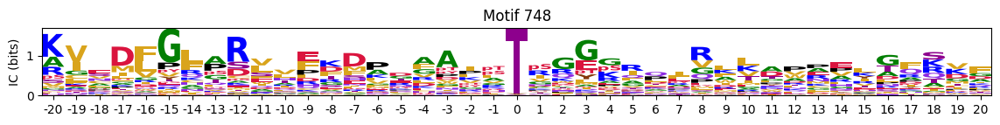


Most common
idxs = all_site_onehot.sum().sort_values(ascending=False).head(20).indexplot_logos(pssms2, *idxs)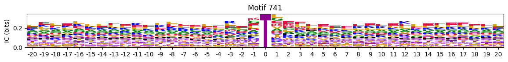

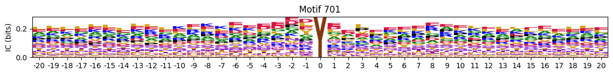
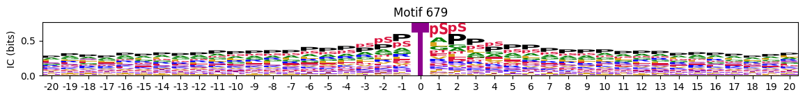
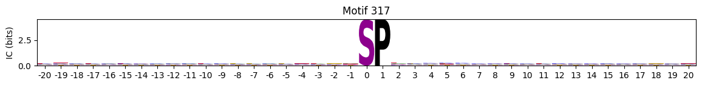
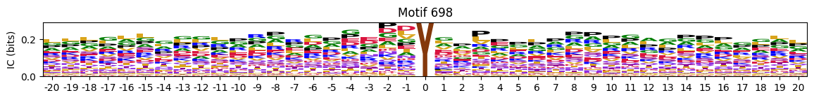
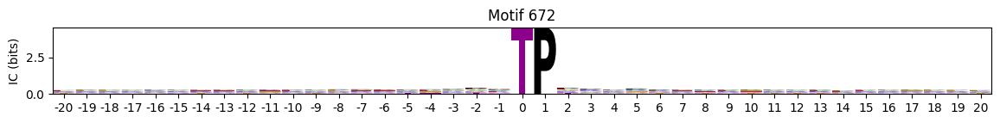
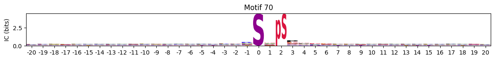

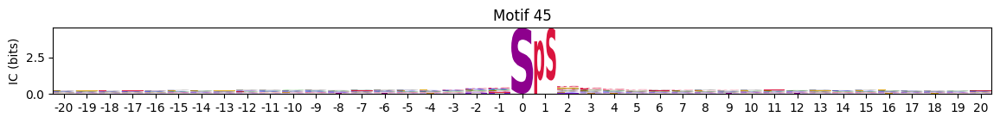
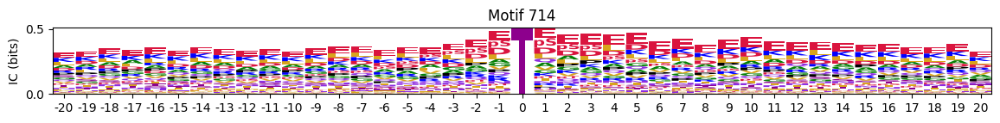
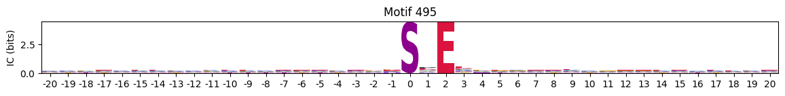
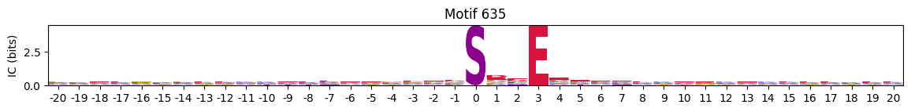
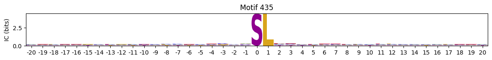

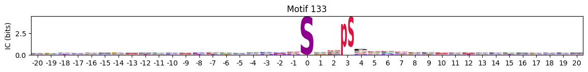
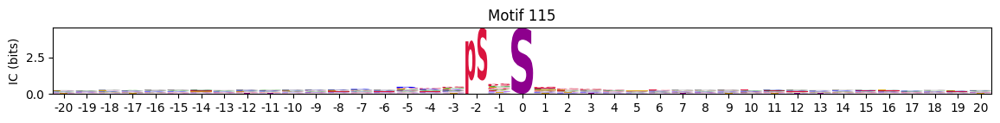
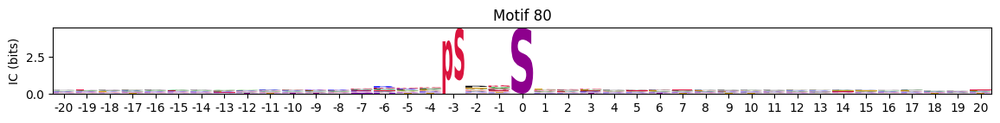
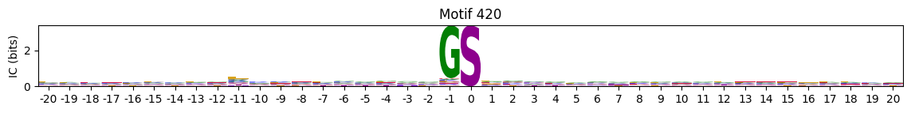
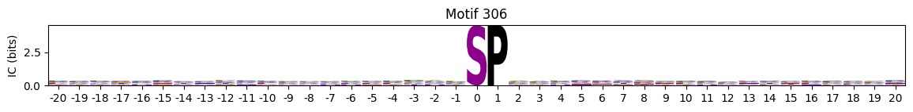
Entropy per position
pssms2_entropy = pssms2.apply(lambda r: entropy_flat(r),axis=1)# remove 0 and focus on those neighboring residues
pssms2_entropy = pssms2_entropy.drop(columns=0)idxs=pssms2_entropy.min(1).sort_values().head(10).indexMotif with lowest entropies:
plot_logos(pssms2,*idxs)

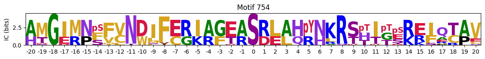


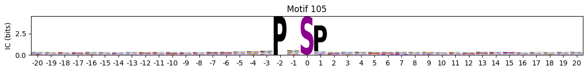
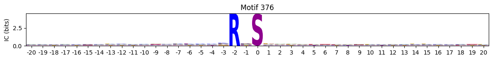
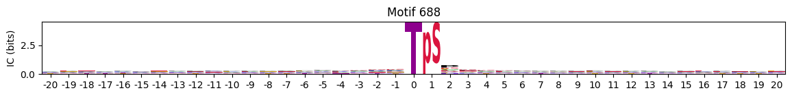
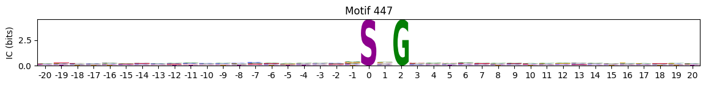
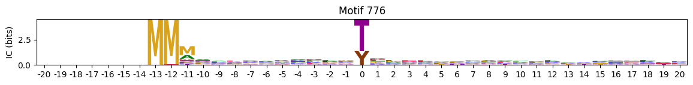
Low sum entropy (similar to median, but remove terminal )
Motifs with low median entropies:
idxs=pssms2_entropy.sum(1).sort_values().head(80).indexThe first one is mostly Zinc finger protein
plot_logos(pssms2,*idxs)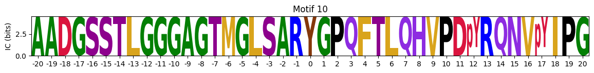
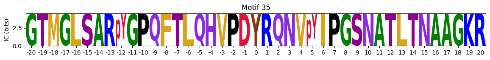
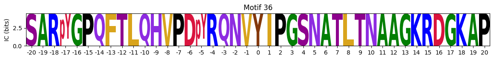

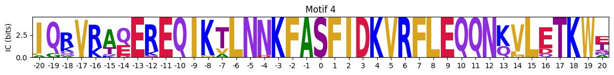
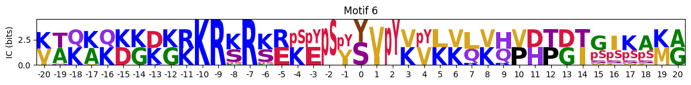
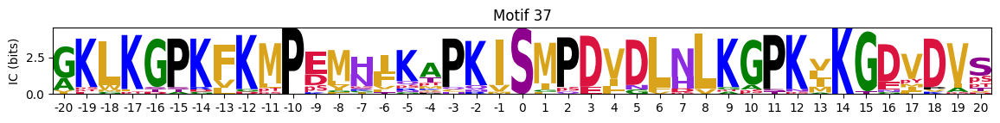

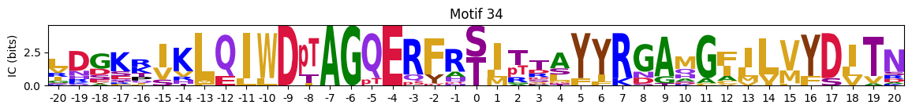
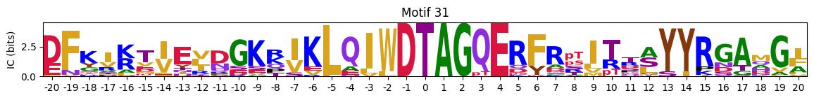
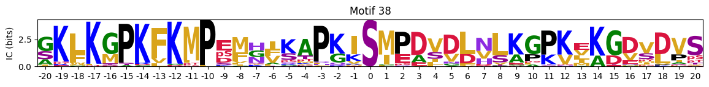

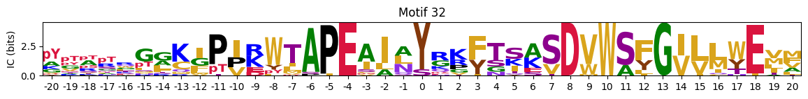
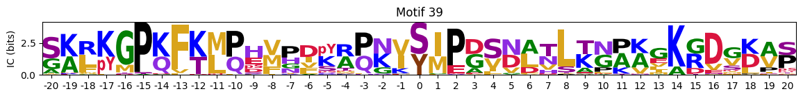
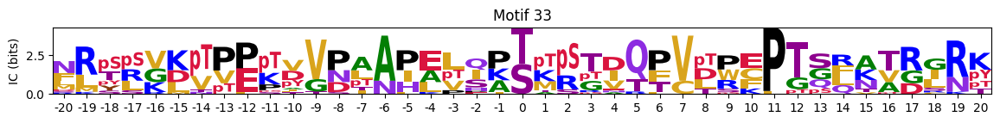

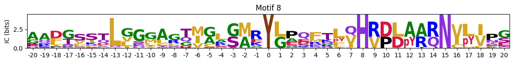

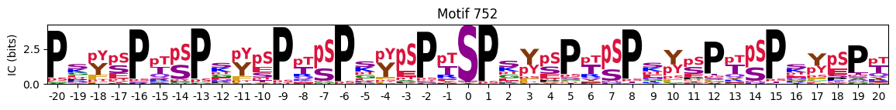
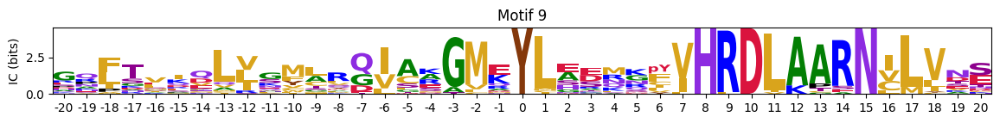
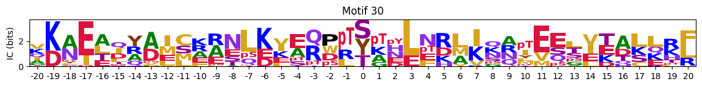
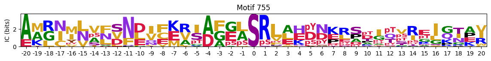
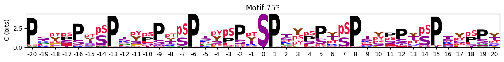
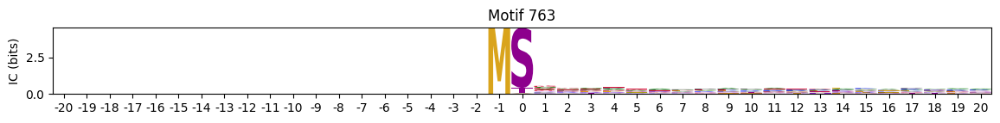
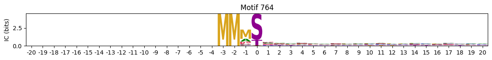
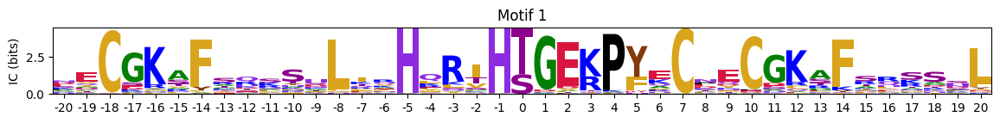
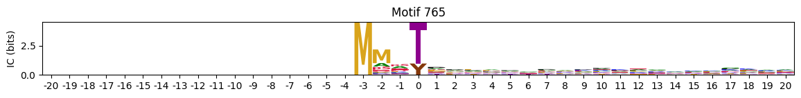
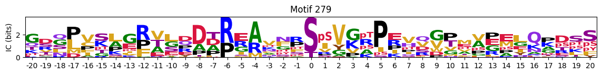

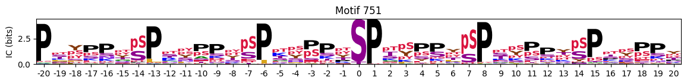
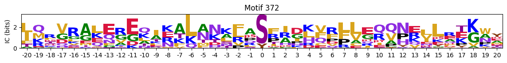
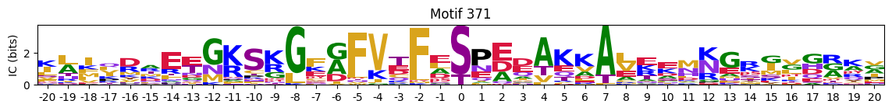


idxs=pssms2_entropy.sum(1).sort_values().head(10).indexidxs=(pssms2==0).sum(1).sort_values(ascending=False).indexC-terminal motifs
zeros_right = pssms2.apply(lambda r: (recover_pssm(r).loc[:,1:].sum()==0).sum() , axis=1)idxs = zeros_right.sort_values(ascending=False).head(10).indexplot_logos(pssms2,*idxs)


N-Terminal motifs:
zeros_left = pssms2.apply(lambda r: (recover_pssm(r).loc[:,:0].sum()==0).sum() , axis=1)idxs = zeros_left.sort_values(ascending=False).head(10).index# zeros = pssms2.apply(lambda r: (recover_pssm(r).sum()==0).sum() , axis=1)
# idxs = zeros.sort_values(ascending=False).head(10).indexplot_logos(pssms2,*idxs)